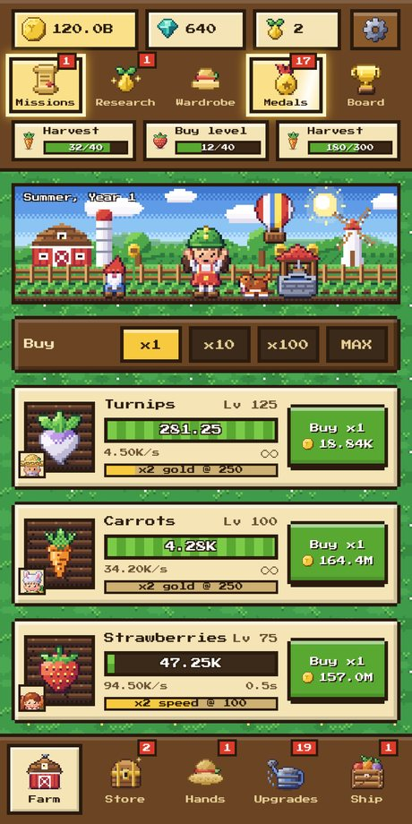
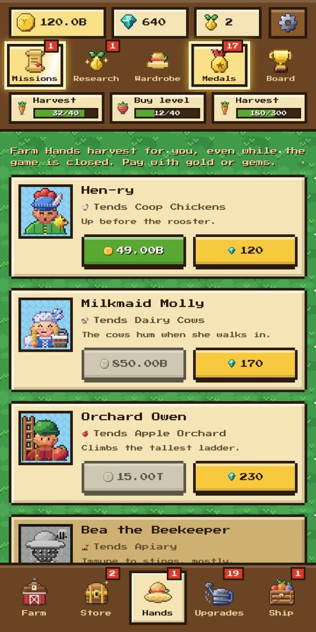
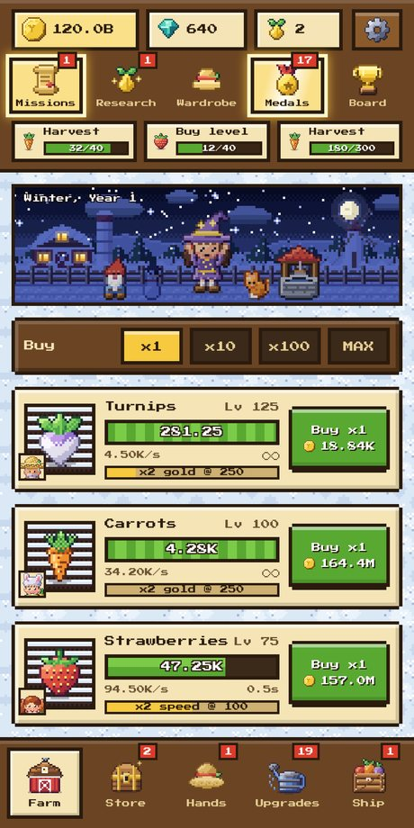
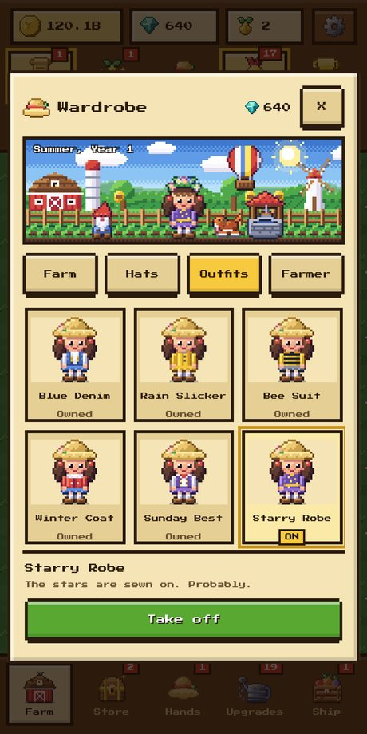
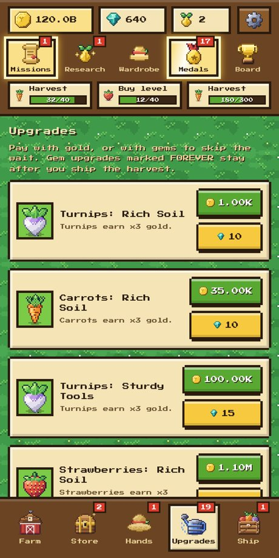
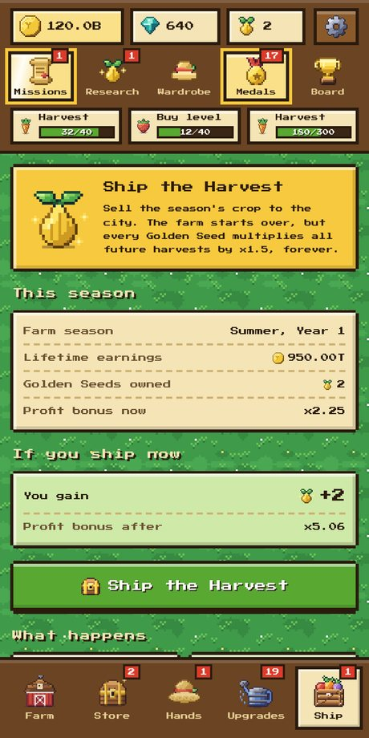
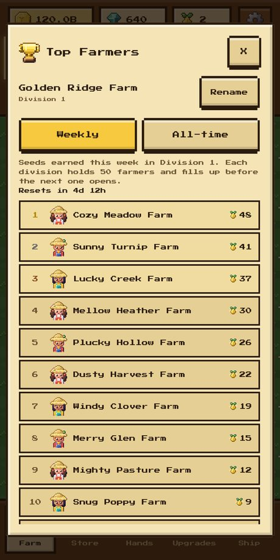
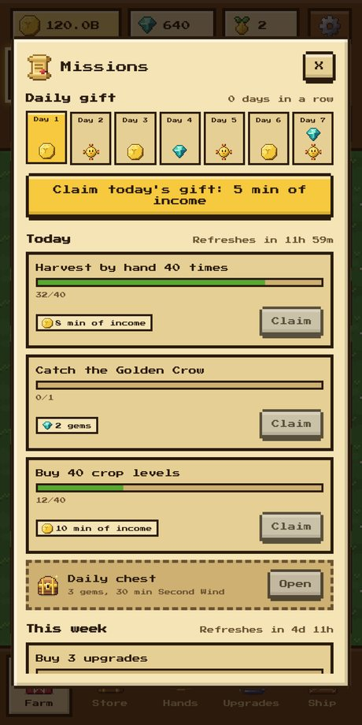
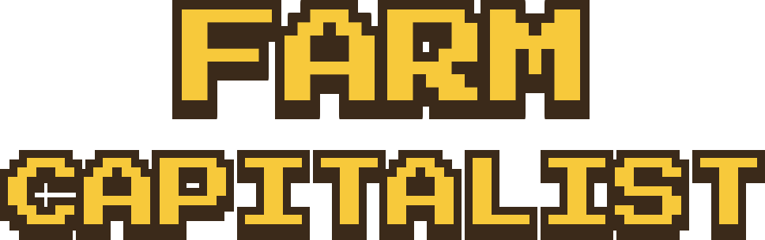
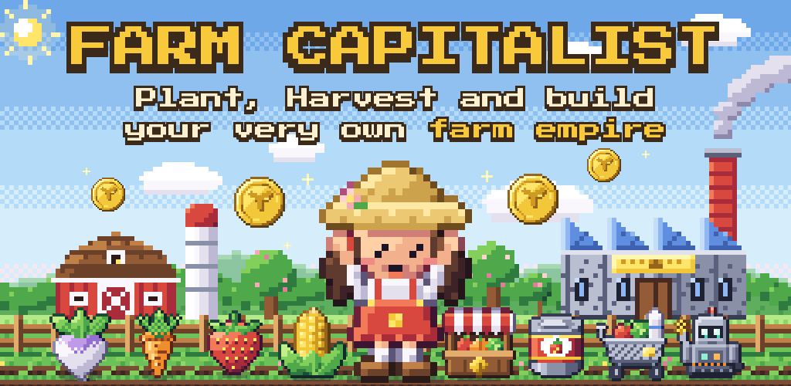

Press kit
Farm Capitalist
Plant. Grow. Profit!
Grow crops, hire Farm Hands and ship the harvest in a cozy pixel-art idle game.
Download the press kit (2.8 MB)
Logo, icon, banner and screenshots in English and Japanese
Fact sheet
- Game
- Farm Capitalist (Google Play title: Farm Capitalist: Idle Tycoon)
- Developer
- Causality
- Platform
- Android 7.0 or newer
- Release
- Out now on Google Play
- Genre
- Idle tycoon, farming, 16-bit pixel art
- Price
- Free to play. Optional rewarded video ads. Optional purchases: gem packs, a one-time Starter Pack and the VIP Farm Club monthly subscription.
- Languages
- English, Japanese
- Account
- None needed. Cloud save with a Google account is optional.
- Google Play
- Farm Capitalist on Google Play
- Privacy policy
- causalityviolation.github.io/FarmCapPrivacy/
- Press contact
- dev.causality@gmail.com
About the game
Farm Capitalist is a cozy idle tycoon game with 16-bit pixel art, made for Android. You start with a single turnip and grow it into a sprawling farm: tap to harvest, buy more crops and hire Farm Hands who keep working even while the game is closed.
When progress slows down, you ship the harvest to the city and start the season again with Golden Seeds that make every future harvest worth more. The farm turns to a starry night after dark, every season has its own song, and the Wardrobe lets you dress up the farm with hats, outfits, pets and decorations.
The game is free to play, with optional rewarded ads and optional purchases. It needs no account and comes in English and Japanese.
Key features
- 18 crops, animals and facilities, from turnips and carrots to dairy cows, truffle pigs and comet fruit, then a farm shop, a cannery and robot harvesters.
- Farm Hands harvest while the game is closed, for up to 12 hours (more with barn upgrades).
- Ship the harvest each season for Golden Seeds that boost every future harvest, and spend the Research Points they bring on a skill tree.
- A song for every season, all synthesized in code, and a starry night sky that follows the phone’s clock.
- The Wardrobe: hats, outfits, pets, garden gnomes and a hot-air balloon. They only change how the farm looks.
- Daily and weekly missions, 50+ achievements, a 7-day gift streak, limited-time events and an optional weekly Top Farmers leaderboard.
- Free and fair: ads are always optional, and gems save time but never decide a race.
Screenshots








Full size (1080 × 2160), with and without captions, in the zip.
Logo and graphics

LogoPNG, transparent · 3 KB- App iconPNG, 512 × 512 · 4 KB

BannerPNG, 1024 × 500 · 22 KB


Videos and streams
You are welcome to record, stream and monetise videos of Farm Capitalist; there is no need to ask. If you would like anything for your video, such as the trailer file or a different screenshot size, just write to us.